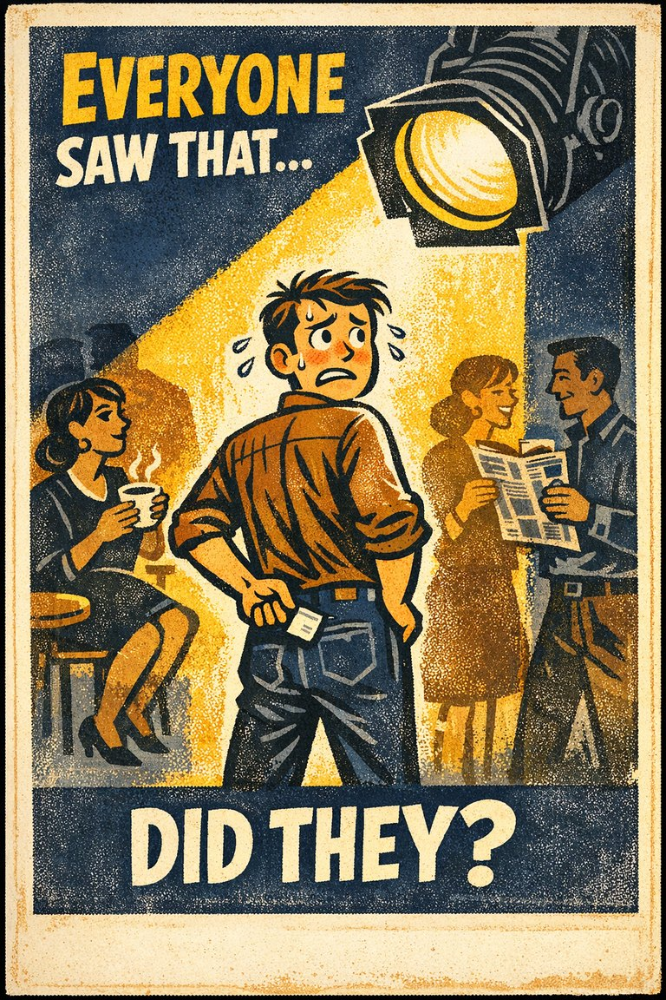
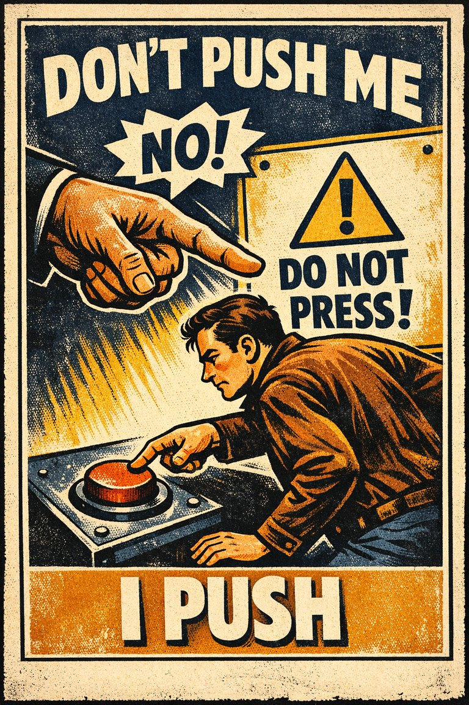
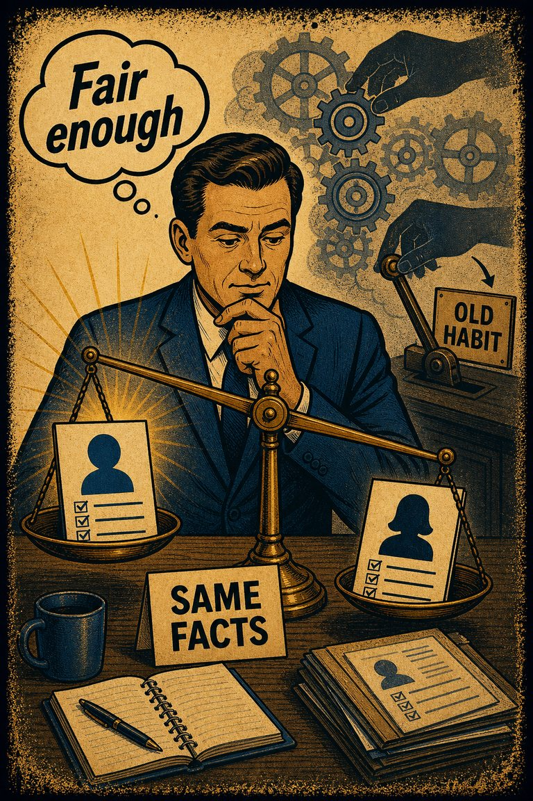

The tendency to over-report socially approved attitudes or behaviors and under-report the ones likely to invite embarrassment, judgment, or sanction.
Opinion ReportingOutcomeSurveys & interviewsTeams & management

The tendency to overestimate how much other people notice, remember, or care about one's appearance, mistakes, or behavior.
EstimationSelf-PerspectivePersonal decisionsConflict & dialogue

The tendency to push back against a perceived attempt to limit one's freedom of choice, sometimes by moving toward the very option one was being steered away from.
DecisionOutcomePersonal decisionsConflict & persuasion

The tendency to overestimate how many other people share one's own beliefs, preferences, habits, or reactions.
EstimationSelf-PerspectiveMedia & politicsTeams & management

The underlying attitudes and stereotypes that people unconsciously attribute to another person or group of people that affect how they understand and engage with them.
Hypothesis AssessmentOutcome